An optional tilt-and-yaw module for the rail, for photographing a pinned
insect from many angles: parts, assembly, wiring, calibration and scanning.
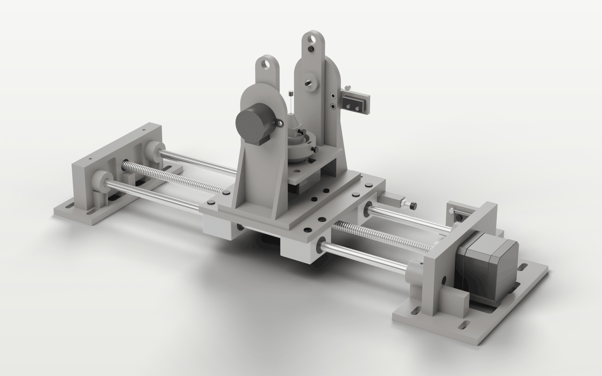
Module version 1, November 2026. It assumes a working rail, built and set up as
described in the MacroRail build guide.
{{contents}}
About the module
The scan module bolts to the rail's carriage in place of the sample platform. It holds an insect
on its pin and turns it about two axes, tilt and yaw, so the app can shoot a focus stack from each
of many angles. The all-in-focus images, named by their angles, go to photogrammetry software
(COLMAP, Meshroom) to build a 3D model.
The module has its own Arduino Nano on its own USB cable. The rail's firmware, wiring and
settings don't change, and the app's 2D mode works the same with or without the module. A
2D / 3D switch in the app's top bar selects the workspace.
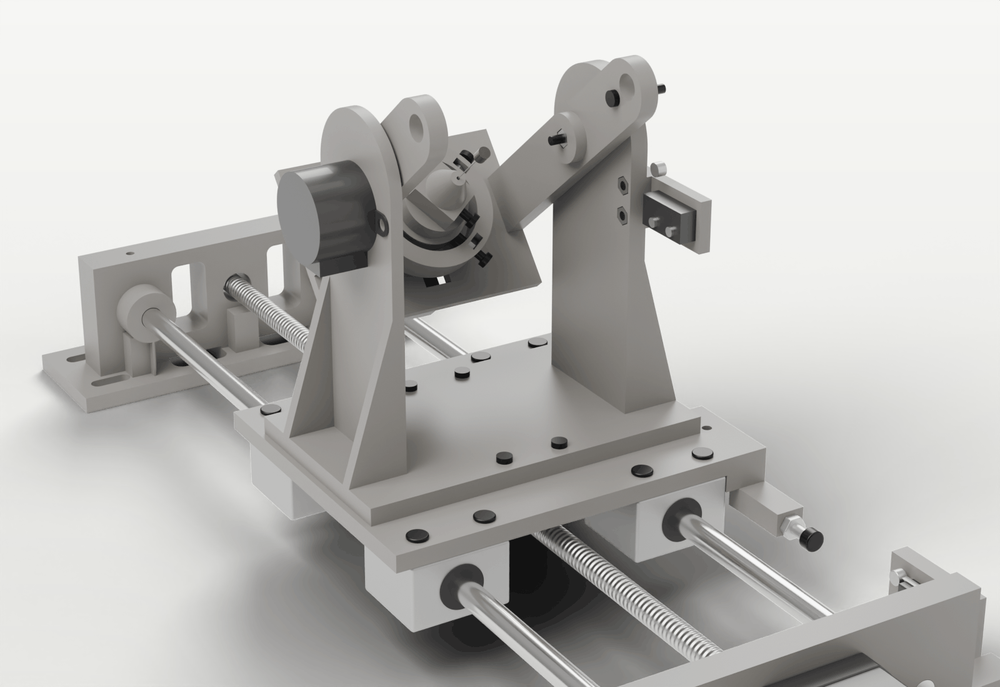
The module on the
carriage, tilted 50° and turned 35°.
Axis
Drive
Range
Home
Tilt
28BYJ-48, direct drive, outside one upright; a printed axle in a 608 bearing on the other
−33° (belly towards the lens) to +90° (top view)
roller microswitch, tripped by a flag bolt at about +97°, away from the lens
Yaw
28BYJ-48 under the cradle floor; the head sits on its shaft
unlimited
KY-024 hall sensor under a magnet in the head; the field peak
Centring
two M3 screws at 90°, turned by hand with a 2 mm hex key; a spring pushes back
±2.5 mm, 0.5 mm per turn
set once per specimen, with the app measuring
Height
the pin slides in the holder; a printed gauge sets it
set by hand
measured by the app
Directions
This guide uses the module's own axes: +X points at the camera (the lens side),
+Y is the bearing and switch side, −Y the tilt motor side, and up
is up with the cradle level. In the app, tilt 0° is level and positive tilt turns the insect's back
towards the camera; yaw is counter-clockwise seen from above, 0° where the magnet passes over the
hall sensor. At yaw 0° centring screw X points at the camera.
Limits
Field of view. At 4× the field is 5.5 × 3.65 mm, so insects larger than about
5 mm don't fit. There is no tiling; use a lower magnification for larger specimens.
Belly views. The 4× objective's 12 mm working distance limits tilt to −33°, so
the underside is only seen at a shallow angle.
Yaw wobble. The head sits on the motor shaft without a bearing. The shaft's play
gives a small, repeatable wobble, well inside the frame once the specimen is centred.
Torque. The cradle needs about 40 mN·m at +90°; the gearbox holds it with the
coils off, but lifting it is close to the motor's limit. A counterweight can be added (section 4.7).
Centring and height are manual and are repeated for every specimen.
Time. A full scan takes hours and thousands of shutter actuations.
Lighting is not part of the module.
What you need
Bought parts
Prices are approximate (euro, 2026) and only a guide.
Part
Qty
Specification
≈ €
Arduino Nano
1
ATmega328P; a CH340 clone is fine; with a USB data cable
8
Geared stepper with driver board
2
28BYJ-48, 5 V version, with its ULN2003 board
6
Hall sensor board
1
KY-024 (linear 49E-type sensor with analogue output AO)
2
Ball bearing
1
608 (8 × 22 × 7 mm)
1
Magnet
1
neodymium disc, Ø5.7 × 1.8 mm as built (pocket Ø6.1)
1
Spring
1
pen spring, OD 4.6 mm, free length 19 mm, wire 0.5 mm
–
Roller-lever microswitch
1
miniature, 20 × 10 × 5.8 mm, holes 9 mm apart, with two Ø1.9 mm screws
1
Motor supply
1
5 V DC, at least 1 A, separate from the Pi (a bench supply or a USB charger with a cut cable)
6
Breadboard and wires
1
half-size breadboard; male–male and male–female jumpers, long enough to reach the module
5
Screws and nuts
M3 button heads and nuts, see 2.3
4
Insect pins
sizes 00, 0 or 1 (0.30–0.40 mm)
4
PLA filament
about 200 g
4
Small cable ties
6
for the cradle cables
1
Total
about 45
The Pi needs a third free USB port (camera, rail Nano, module Nano). An 8 mm
rod with nuts can serve as an optional counterweight for the cradle.
Printed parts
The STLs are in hardware/scan-module/exports/final/, in model coordinates: use
place on face in the slicer. The prototype was printed in PLA at 0.2 mm layers on a Prusa
i3 MK3, without supports. Use at least 4 walls and 5 top and bottom layers, as for the rail.
Part
Qty
Face on the bed
Notes
Fork
1
base underside
bolts to the carriage; holds the tilt motor, the 608 and the switch bracket. About 12 cm tall.
Cradle
1
floor underside
arms print upright (about 110 mm); the hub bores print on their side
Yaw head
1
bell underside
snap off the thin fin under the spring housing after printing
Specimen holder
1
plate underside
centring plate, clamp column and nose in one part, nose up
Tilt axle
1
flange
shank upright, so it comes out round
Axle spacer
1
flat
Endstop bracket
1
back (the flat side)
pad side up; Ø1.5 pilot holes for the switch's screws
Carriage washer
4
flat
the carriage holes are Ø4.5, so M3 nuts need a washer
Height gauge
1
underside
a tool, not mounted: steps 17–21 mm above the nose tip
Screws and nuts
All screws are M3 button heads, turned with a 2 mm hex key; socket heads fit too. Lengths are
under the head, as measured on the prototype's screws.
Screw
Qty
Where
M3 × 12 (11.8)
11
tilt motor 2, yaw motor 2, KY-024 1, centring screws 2, pin clamp 1, yaw set screw 1, endstop bracket 2
M3 × 18 (17.5)
5
fork to carriage 4 (with the printed washers), tilt home flag 1
M3 × 28 (27.7)
1
tilt axle
M3 nut
17
one for every screw; the 5.7 mm pockets take both 5.2 and 5.5 mm nuts
Tools
A 2 mm hex key; a small Phillips screwdriver (the switch's screws); flat pliers (pushing nuts into
their slots); superglue; a vice or clamp and a flat block (the bearing); a 5 mm drill bit, turned by
hand, to clean a D-bore that is too tight; a multimeter; side cutters.
Printing and test pieces
Print the test pieces in hardware/scan-module/exports/test-pieces/ before the large
parts. The six tp-* files are slices of the real bodies; the small parts are printed
whole and serve as their own test.
Test piece
It passes when
tp-bearing-seat
the 608 presses in by hand or in a vice and doesn't fall out; the lip stops it
tp-motor-seat
the tilt motor's boss drops into the recess, both ear screws line up and their heads sit flush
tp-base-holes
laid on the carriage, the four screws line up and it sits flat over the bearing-block screw heads
tp-tilt-d-bore
goes onto the shaft of the motor on tp-motor-seat firmly by hand, covers the flats, no play
tp-axle-socket
the axle's spigot fits; the nut presses into its pocket
tp-cradle-floor
yaw motor boss, ear screws, KY-024 screw and board seat, sensor pocket and lead slot all fit
yaw-head
fits the yaw shaft; the set-screw nut, centring nuts, magnet and spring go in; the fin snaps off cleanly
specimen-holder
slides freely in the ring between the screw tips and the spring; the pin slides through the nose; the clamp nut can't turn
endstop-bracket
bolts to the +Y upright; the switch's holes line up with the pilot holes and its screws bite
tilt-axle, axle-spacer
the axle slips through the 608; the spacer slides over it
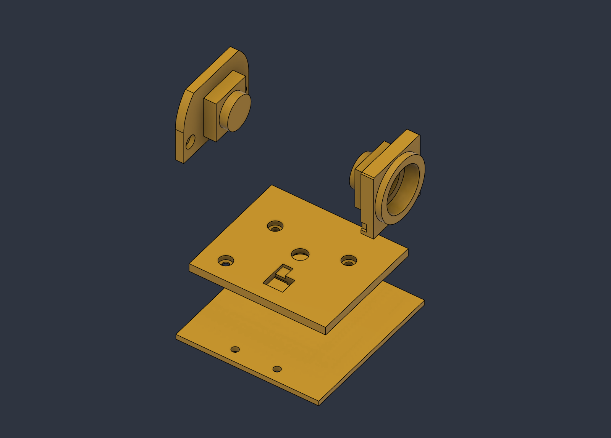
Test pieces of the fork (Fusion
360 view).
If a fit is off
Every fit is one parameter in the Fusion 360 model (hardware/scan-module/fusion/);
change it and re-export, and only the affected parts need reprinting. The values below came from
two rounds of test prints.
Fit
Parameter
Value
608 bearing seat
fit_press
0.35 (0.25 was slightly tight)
Yaw D-bore in the head (printed upright)
fit_D
0.1 (at 0.2 it held only with the set screw)
Tilt D-bore in the cradle (printed on its side)
fit_Dt
0.05
Nut pockets
m3_pocketAF
5.7 across flats, 2.6 deep
Pin clamp nut slot
clampNut_H
5.5
Magnet pocket
magPocketD
magnet + 0.4
Pin hole
pinHoleD
1.2 (1.0 was tight)
Switch screw pilots
ws_pilotD
1.5
Assembly
Build three groups on the bench, the fork, the cradle and the yaw head, then put them together.
Every nut goes into its printed pocket or slot first, so one hex key turns every screw. If a nut
won't stay in, a dab of glue on its outside is fine.
Fork
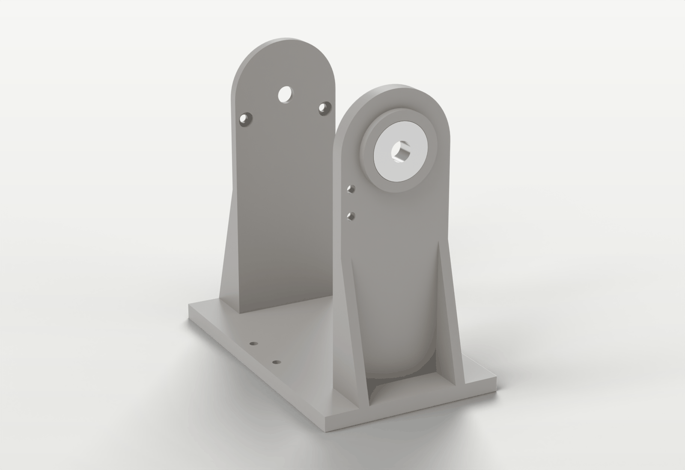
The fork with the 608 in
the +Y upright.
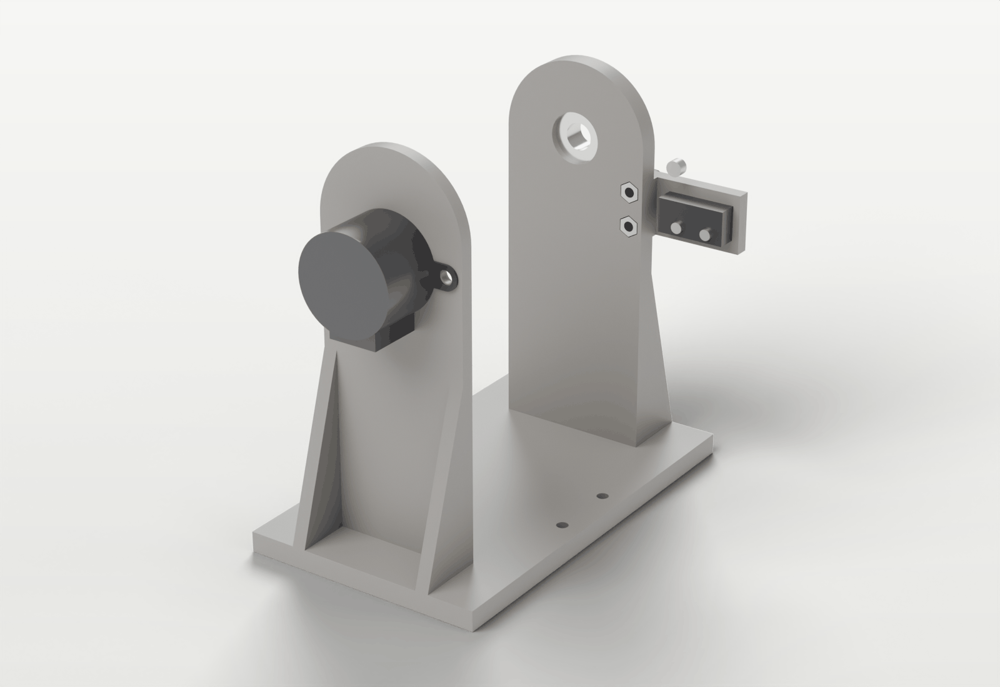
The fork with
the tilt motor (fitted later, in 4.4) and the switch bracket.
Bearing. Press the 608 into the round housing on the +Y upright from the
outside, flat and square, with a vice or clamp and a flat block. It stops against a thin lip
on the inside. Check that the inner race still turns freely. The lip takes the load, and the axle
later clamps only the inner race, so the outer race is never squeezed.
Switch on the bracket. Hold the switch on the bracket's flat face next to the
raised pad, at the end away from the two large holes: pins down, the lever's pivot end towards the
camera (+X). Drive the two small screws through the switch into the pilot holes. Click the lever:
it must move freely. Don't glue it yet.
Bracket on the fork. Push two M3 nuts into the hex pockets on the inside of the
+Y upright, below the bearing. Hold the bracket against the outside, pad against the upright and
the switch towards the camera side, and fix it with two M3 × 12.
Tilt motor: not yet. Its shaft has to slide into the cradle's hub from outside,
so it goes on once the cradle is in place (4.4).
Cradle
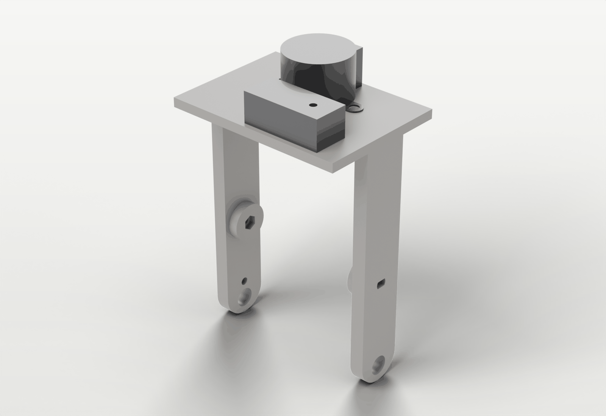
The cradle upside down:
the yaw motor and the KY-024 board under its floor.
Hall sensor. On the KY-024, bend the small black sensor (on its long legs)
flat, lettered face up. From below, feed its legs through the slot in the floor so the sensor lies
in the shallow pocket on top, flush with the surface. The magnet passes 0.8 mm above it, so
nothing may stick up.
KY-024 board. Fix the board under the floor with one M3 × 12: head on top
in its counterbore, nut under the board.
Yaw motor. From below, push the shaft up through the large hole, boss into
its recess. Fix the two ears with M3 × 12, heads from the top in their counterbores, nuts under
the ears. The heads must end flush with the floor or below it: the head turns 1 mm above it.
Yaw head and specimen holder
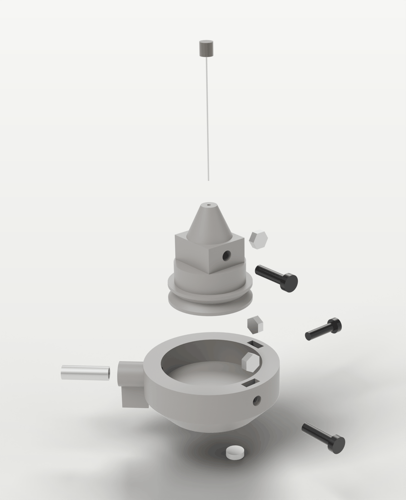
The yaw head parts, top to
bottom: pin, holder with clamp nut and screw, head with centring screws, nuts and spring, and the
magnet.
Fin. Snap off the thin fin under the spring housing; wiggle it and it breaks
at its root.
Nuts. Push M3 nuts into the two slots in the top of the ring wall (for the X
and Y screws) and one into the slot in the hub (for the set screw).
Magnet. Press the magnet into the small off-centre pocket under the head; a
drop of glue keeps it. Either pole works.
Centring screws. Turn an M3 × 12 into each ring nut from outside until the
tip just shows inside the ring.
Onto the motor. Push the head onto the yaw shaft, flats lined up with the
bore. Turn the set screw (M3 × 12) into the hub nut until it bites on the shaft's flat. Turn the
head by hand: it must clear the floor and run true.
Holder. Push an M3 nut into the side slot of the holder's column; it only
fits flats up and down, which stops it turning. Turn the clamp screw in from the opposite face
until it just reaches the pin hole.
Spring. Drop the pen spring into its bore from inside the ring. Press the
holder's rim against the spring, lower it into the ring and let go. The screw tips and the spring
sit in the rim's V-groove, so the holder slides but can't lift out.
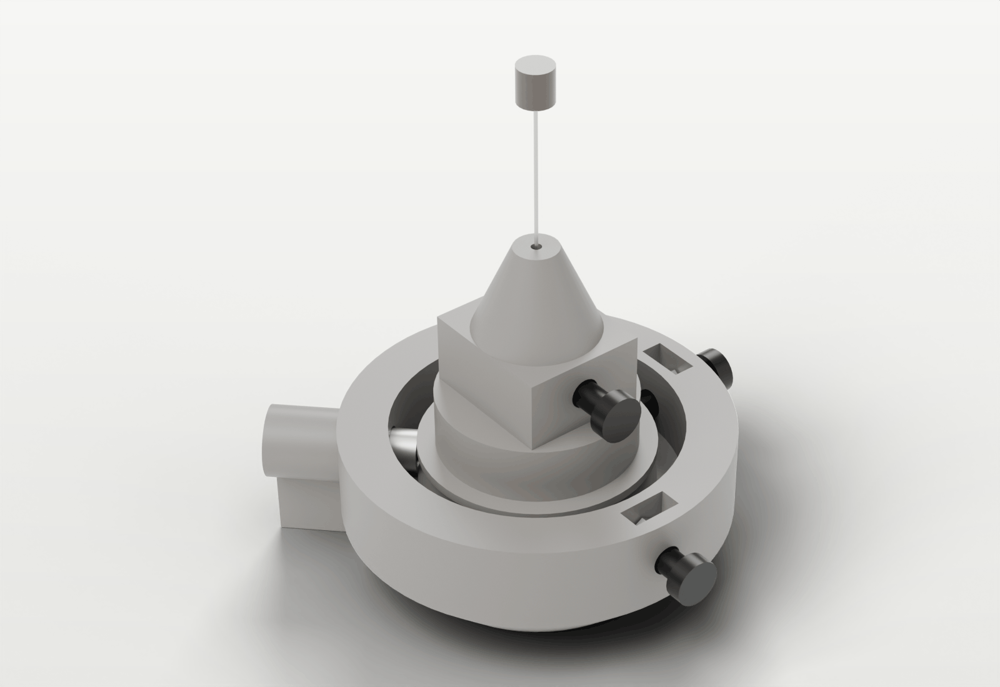
The finished head:
centring screws on two sides, the spring housing opposite, the pin in the holder's nose.
Cradle into the fork
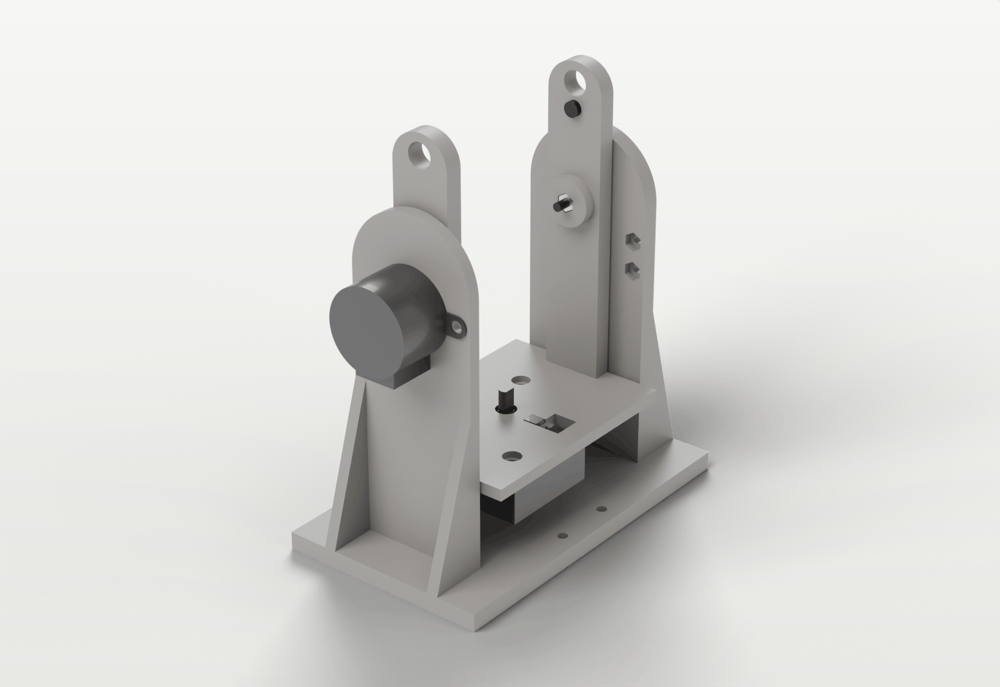
The cradle hung in the
fork on the tilt motor's shaft and the tilt axle, with the flag bolt.
Cradle in. Lower the cradle, with its head, between the uprights. It fits
with 1 mm each side.
Tilt motor. From outside the −Y upright, push the motor's shaft through the
hole into the cradle's hub. Turn the cradle until the flats line up, then push until the motor's
boss drops into its recess and the motor sits flat. Fix the two ears with M3 × 12 from the
inside (heads in the counterbores, reached past the cradle arm), nuts on the ears.
The tilt shaft must be fully seated
The motor's shaft carries the cradle on this side. Fully seated, about 6 mm of its flats are
inside the hub.
Axle. Push an M3 nut into the hex pocket on the inside of the cradle's +Y hub.
Hold the spacer against the outside of the +Y arm, centred, and push the axle in from outside:
through the bearing, the spacer and into the arm's socket. Fix it with the M3 × 28 from the flange
side into the nut until nothing wobbles. This clamps the axle, the spacer and the bearing's inner
race to the cradle; the bearing does the turning. It also holds the cradle sideways, so it can't
slide off the motor shaft, which is why the tilt hub needs no set screw.
Flag. Put an M3 × 18 through the small hole near the top of the +Y arm, head
inside, nut outside. The end of this screw presses the home switch.
Tilt endstop
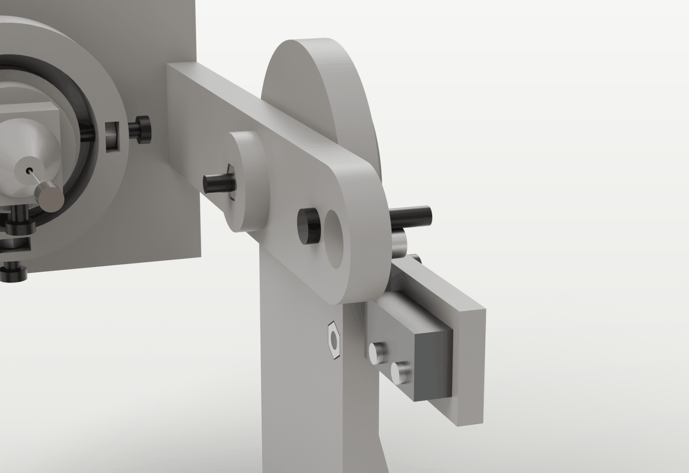
The flag bolt on the switch
roller at tilt home.
Tilt turns slowly away from the lens until the flag bolt presses the switch. The flag meets
the roller at about +90° and the switch clicks at about +97°, beyond the +90° working limit.
Homing away from the lens means that a missed switch can never drive the insect into the
objective.
Swing the cradle by hand past +90° and listen for the click. The app's tilt calibration
(section 8) measures the real angle, so the bracket only needs moving if the click is far from
+97°. Once it is right, put a drop of superglue between the switch and the bracket.
On the rail
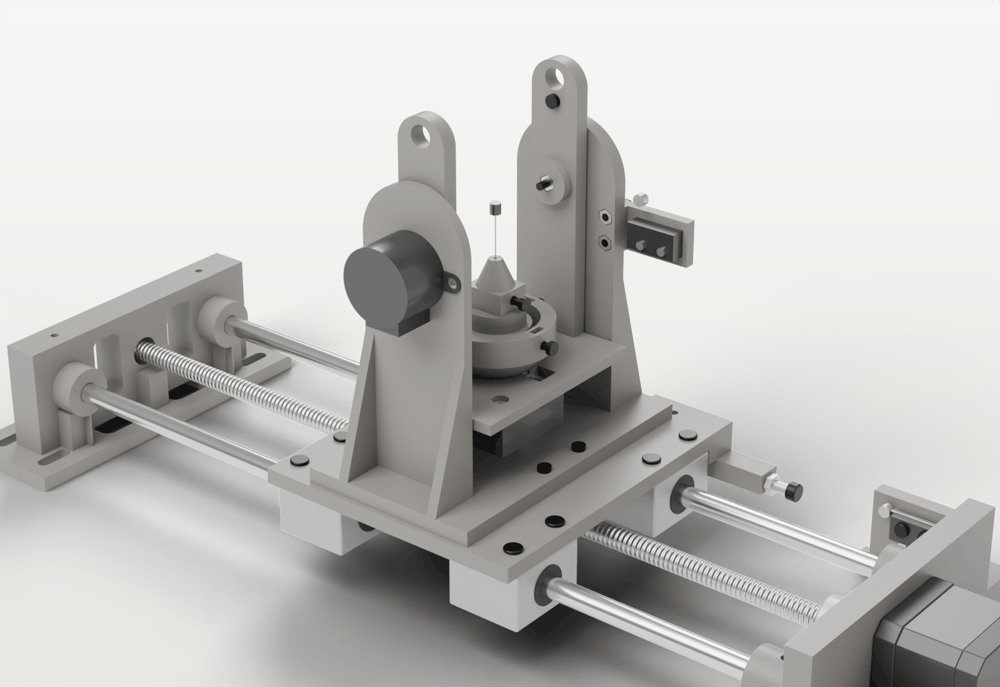
The module on the carriage,
sample platform removed.
Remove the rail's sample platform.
Tilt the cradle to about 90° to reach the base.
Put four M3 × 18 down through the base and the carriage's four free holes, with a printed
washer and a nut underneath each. The stack is 15.7 mm, so each screw shows 1.8 mm past its
nut, clear of the lead-screw nut and the bearing blocks.
The tilt axis is 95 mm above the carriage. Set the camera so the lens axis is at that
height.
Checks before any power
Swing the cradle slowly by hand from −30° to past +90°. The gearbox turns stiffly, which is
normal. Nothing rubs, and the arms stay 1 mm from the uprights.
Past +90° the flag meets the roller and the switch clicks.
Turn the head a full turn by hand, slowly, through the gearbox. The holder stays in its ring.
The holes at the top of the cradle arms (Ø8.3, 38 mm above the axis) take an optional
counterweight: an 8 mm rod with nuts, if tilt ever loses steps near +90°.
Wiring
The module Nano drives the yaw and tilt motors through their ULN2003 boards, reads the tilt
switch and the KY-024's analogue output, and talks to the app over USB. The motors take their
power from a separate 5 V supply; only its ground is joined to the Nano's.
{{module_overview}}The module's connections. The rail's parts
(dashed) don't change.
Why a separate 5 V supply
Each 28BYJ-48 draws about 240 mA while it moves. The Nano's 5 V comes from the Pi's USB, which
also feeds the camera link and the rail Nano; motor current there causes resets and USB drop-outs.
Never join the supply's + to the Nano's 5V pin: two supplies would fight each other.
The parts
{{uln_figure}}A ULN2003 driver board. The Nano's pins can't drive
a coil; the board switches each coil for it.
{{motor_figure}}The 28BYJ-48.
Use the 5 V version (5VDC on the label); the 12 V one is too weak at 5 V. The plug fits
the board's socket one way only. The gearbox holds the load with the coils off, and the firmware
switches them off 300 ms after every move, so the board's LEDs are dark at rest.
{{ky024_figure}}The KY-024 hall sensor board.
Only the analogue output AO is used: the firmware finds the peak of the field, which repeats
far better than the board's on/off output DO. DO, its LED and the potentiometer are unused. With
no magnet near, AO reads about 512.
The tilt switch is wired like the rail's home switch: C to GND, NO to D10, NC empty. Pressing it
pulls D10 low. The firmware watches it during every tilt move, so the first contact stops the tilt
at once.
To wire it normally closed (C and NC) instead, set SWITCH_ACTIVE_LEVEL
to HIGH in firmware-module/src/config.h.
The module Nano
{{nano_module}}The module Nano as it sits on the breadboard, USB to the left.
{{nano_module_legend}}
The yaw board takes D2–D5 and the tilt board D7, D6, D9 and D11, each in the order IN1, IN2, IN3,
IN4. Note the tilt order: IN1 is on D7 and IN2 on D6, as the firmware expects
(TILT_IN in firmware-module/src/config.h). D8 stays free and D10 is the
switch. IN1 has the same colour on both boards, and so on, so a swapped pair is easy to spot.
Complete wiring
{{module_wiring}}The complete module wiring. Holes a–e of one column are one
strip, f–j another. The top rails carry the motor supply, the bottom rails the Nano's own 5 V for
the hall sensor; the GND rails are joined through the Nano's GND pins, the + rails never. The pin
order on the driver boards varies between makers: go by the printed labels.
Wire table
Reusing a Nano from another project?
Remove any capacitor between RST and GND (often 10 µF, fitted to stop the Nano resetting when its
port opens). The app relies on that reset: the Nano then says which controller it is, and uploading
firmware needs it too. A capacitor across 5V and GND can stay.
{{module_wires}}
Cables on the module
The tilt motor and the switch sit on the fixed fork, so their cables simply run down the
uprights. The yaw motor and the KY-024 ride on the cradle, which swings from −33° to +97°; their
cables must follow that swing without pulling, rubbing or catching.
{{routing_figure}}Cable routing, seen from the camera.
Take the cradle's cables to the −Y side (the tilt motor side), along the underside of the floor
and up the −Y arm, and tie them to the arm with two small cable ties.
Leave a loose loop near the tilt axis, where the arm moves least, then run the cables down the
back (−X) of the −Y upright beside the tilt motor's cable and tie them there. The loop must allow
the full 130° swing.
Keep the +Y side clear: the flag bolt swings past the switch there. A cable on that side could
press the switch or block the flag.
Keep the camera side clear: the lens looks between the uprights from +X, so all cables leave at
the back.
Nothing electrical turns with the yaw head, so no cable may touch the head or the centring
screws.
Firmware and connection
Flashing the module Nano
The module's firmware is in firmware-module/. Flash it on the Pi with the module Nano
plugged in, stopping the app first because it owns the serial ports:
sudo systemctl stop macrorail
ls /dev/serial/by-path/ # unplug and replug the module Nano to see which entry is its
~/.local/bin/pio run -d ~/macrorail/firmware-module -e nano -t upload \
--upload-port /dev/serial/by-path/<the module's entry>
sudo systemctl start macrorail
Or from any computer with PlatformIO, with only the module Nano connected:
pio run -d firmware-module -e nano -t upload. Use -e nano_new for a genuine
or new-bootloader Nano.
Pick the right port
Flashing the module firmware onto the rail's Nano stops the rail working until it is flashed
again with firmware/.
Telling the two Nanos apart
Both Nanos are usually CH340 clones without a serial number, so their
/dev/serial/by-id names are identical. In ~/.config/macrorail/config.toml,
both ports should be "auto" (the default):
[rail]
port = "auto"
[module]
port = "auto"
With "auto" the app asks each Nano what it is: the module firmware says so in its
first line. Alternatively give each port its USB socket's path from
ls /dev/serial/by-path/, which stays the same while the cable stays in that socket. An
older config with a by-id path under [rail] must be changed before the
module is plugged in: the installer never overwrites an existing config. Then restart the app:
sudo systemctl restart macrorail.
In the app
Switch the app to 3D in the top bar. The System tab gains a Scan
module card (connection, readings, manual tilt and calibration) and a Module
test card; the Rig, Centre and Scan tabs appear. The module's status shows in the top bar:
Module offline, Module not homed or Module homed.
The module keeps its homing across USB reconnects and app restarts, as long as it keeps power;
a real power loss resets it.
First power-up
Do these checks in order, before any homing and with no specimen in the holder. Move the rail
so the module is well clear of the objective: until tilt is homed its angle is unknown and no tilt
limits apply.
Supply. With the supply unplugged, set it to 5.0 V and check the wiring with a
meter on continuity: the top GND rail beeps to the Nano's GND; the two + rails don't beep to each
other or to GND. Then connect + to the top + rail and − to the top GND rail.
Power on. Supply on, module Nano on the Pi. The Scan module card on the System
tab shows Not homed, not Offline. Nothing moves, and the driver boards' LEDs are
dark.
Switch. Press the tilt switch by hand. The Module test readings show it pressed,
and released when you let go.
Hall sensor. Watch the hall reading on the Scan module card and turn the head
slowly by hand past the sensor (the coils are off at rest). Away from the magnet it reads about 512;
near it, it must move at least 40 away from that, up or down. If it hardly moves, check that the
sensor lies flat in its pocket and that the magnet is in the head.
Tilt direction. In Module test, choose a small step and press − Belly
a few times. The tilt board's LEDs flicker, and the cradle must turn the insect's belly towards the
lens: the flag bolt moves away from the switch. If it turns the other way, set
TILT_INVERT = true in firmware-module/src/config.h and reflash. Before
homing, tilt moves at most 10° per press and nothing stops it short of the lens, so watch it.
Yaw direction. Press Counter +. The head must turn counter-clockwise
seen from above. If it turns clockwise, set YAW_INVERT = true and reflash.
Home. On the Rig tab, press Home (tilt, then yaw; the
Tilt only and Yaw only buttons home one axis). Tilt turns slowly away from the
lens until the flag presses the switch, backs off until it releases and touches it again; that
contact is the tilt reference. Yaw turns counter-clockwise for up to about 1.3 turns while
sampling the hall sensor, finds the magnet's peak and stops on it from the same side. Watch the
first time, ready to press Stop.
Cables. With the quick poses Belly view and Top view, take
the cradle slowly through its whole range and watch the cable loop.
The Rig tab: homing, gauges, jogs and
angles.
Moving the axes
The Rig tab jogs each axis, goes to typed angles, and has quick poses: Level,
Top view, Belly view (the lowest allowed tilt), and Screw X to you and
Screw Y to you. The gauges show the cradle's tilt with the no-go zone towards the lens,
and the head's yaw with the screws marked. The live view's corner shows both angles beside the
rail position.
Every arrival ends turning the same way, with a 3° take-up (tilt from above, yaw
counter-clockwise), so the gearboxes' backlash is always taken up alike.
Calibration
Two measurements, once per machine, on the System tab in 3D under Scan module. The
results are kept in ~/.local/share/macrorail/module.json.
Yaw turn
The 28BYJ-48's gear ratio is not a whole number and varies between motors: nominally 4075.77
half-steps per output turn, but the prototype's yaw motor measured 4096.33. Press
Measure yaw turn with nothing on the holder. The module homes yaw, turns three
times and homes again; where the second homing finds the magnet gives the half-steps per turn.
It takes about two minutes. A result more than 2 % from nominal is refused, since it means the head
slipped on its shaft: tighten the set screw and measure again.
Tilt level
The switch's true angle is measured with a straight needle. Clamp a straight pin upright in the
holder, home the rail and the module, focus on the middle of the pin, and press
Level tilt. The module tilts it 10° each way, at yaw 0° and 180°, and compares
where the pin's top and bottom come into focus; a pin leaning in the holder cancels out. Afterwards
tilt is level and opens to its full range. Until this has been done, tilt stops at −20° on the belly
side instead of −33°.
The tilt motor keeps the nominal gear ratio: its calibration measures only the
switch's angle.
Mounting and centring a specimen
An insect never sits exactly on its pin's axis, so when the head turns it travels a circle and
leaves the 5.5 mm field. Centring moves the holder until the insect sits where the yaw and tilt axes
cross. It is done by hand with the two screws, with the app measuring, and usually takes two rounds.
Mounting
Loosen the clamp screw half a turn. The holder stays in the head; only the pin
is changed.
Pin. Push the specimen's pin down through the hole in the nose.
Height. Stand the height gauge on the nose tip with the pin in its slot. Slide
the pin until the middle of the insect is level with the 19 mm step, the tilt axis's height. The 17,
18, 20 and 21 mm steps show how far off it is.
Clamp. Tighten the clamp screw gently; it only has to stop the pin moving.
Centring
The Centre tab after one round:
the offset, the screw dials and the buttons that turn each screw to you.
Home the rail and the module, and focus roughly on the insect.
Optionally press Spin: yaw keeps turning while you watch the live view and
turn the screws by eye until the insect stops swinging from side to side. Then Stop.
Press Measure. The module turns to yaw 0°, 90°, 180° and 270°, focuses at each
and finds the insect across the image. A circle fit gives its offset from the yaw axis, and a
dashed line in the live view marks where the axis appears.
Turn the screws as shown, in eighths of a turn (an eighth is about 60 µm).
Screw X to you and Screw Y to you turn the head so that screw faces you, by
default 45° beside the objective (Screw angle for the key on the Centre tab).
Press Measure again until the offset is under 0.1 mm.
Measure height focuses at +20° and −20° tilt and says how far to push or pull
the pin.
Turning a screw in pushes the holder away from it; backing it out lets the spring push the
holder back. Each round also checks the last advice: if a screw moved the plate the opposite way,
its direction is flipped and stored, so the next advice is right. New specimen
clears the rounds and the height for the next insect.
Scanning
The Scan tab: the plan, the pose map,
the estimate and the pre-flight list.
A scan is a ring of yaw angles at each of several tilts. The default plan is tilts +60°, +30°,
0° and −30° with a yaw step of 36°: 40 poses. Rings run from the top down, and yaw only turns
forwards, so every arrival takes up the gear backlash the same way.
At each pose the app turns the module and waits (1 s by default), runs a focus scan to find the
insect's front and back, shoots an ordinary focus stack through that range with the 2D step size,
and builds the pose's preview and depth map. It keeps every tenth small frame on the Pi to save
space; the full-size files stay on the camera's card. If a focus scan finds nothing, the last
range is used.
Set the tilt rings and the yaw step. The tab shows the number of poses and shots, the time and
the space needed on the Pi and on the card.
Check the pre-flight list: rail and module homed, camera and live view available, room on the
Pi, whether the specimen has been centred, and a reminder to use a dummy battery.
Test this pose runs one pose at the current angles: a quick check of focus,
range and exposure.
Start scan. Pause, Resume and Stop work as for a stack; the top bar's Stop stops
the scan.
The scan's record is written after every pose. After a stop or a restart, Continue
homes yaw again and skips the poses already done; the step, settle time and focus span are fixed at
the start, so the remaining poses are shot the same way. If the very first pose finds no range, the
scan stops so you can focus, then continue.
As a rough guide, at 4× (32.5 µm step) with 2.5 mm of depth per pose, a pose is about 78 shots
and four to five minutes: the default plan takes around three hours and about 30 GB of full-size
JPEGs on the card. Run the camera from a dummy battery, with its USB Power Supply set to Off.
Manual tilt
To set tilt by hand instead of with its motor, turn on Manual tilt on the Scan
module card. Tilt then needs no homing and its controls are hidden; centring works at whatever tilt
the cradle is set to. A scan pauses before each tilt ring with a message such as Set the tilt
to 30° by hand, then press Resume, and turns only yaw. Levelling tilt and the height
measurement need the motor and are not available.
Review and export
A scan in the Review tab
(3D): one thumbnail per pose.
In 3D, the Review tab lists scans. Each pose's thumbnail opens the usual stack viewer: preview,
depth map, 3D relief and frames. Pose stacks don't appear in the 2D Review.
Download for 3D streams a zip with one all-in-focus image per pose, named by its
angles, the depth maps, and the pose table:
MacroRail-scan-<id>/
images/pose-001_tilt+060_yaw000.jpg all-in-focus preview per pose (1600 px)
depth/pose-001_tilt+060_yaw000.png 16-bit depth map (white = first shot)
depth/pose-001_tilt+060_yaw000-colour.jpg
poses.csv pose, tilt, yaw, image, stack, shots, first and last camera file
scan.json the full record: plan, poses, results, camera file names
about.json angle conventions and what the files are
The images/ folder can go straight into COLMAP or Meshroom for a draft model. The
previews are quick stacks at 1600 px; for full quality, stack the full-size files from the camera's
card per pose (Zerene Stacker, Helicon Focus), using the file names in poses.csv, and
reconstruct from those.
Troubleshooting
Symptom
Likely cause and fix
The Scan module card shows Offline
Check port = "auto" under [module], that the module firmware is flashed, that no capacitor sits between RST and GND, and that the USB cable carries data. ls /dev/serial/by-path/ must list it.
The rail is no longer found after plugging in the module
The config still names a by-id path, which can now point at either Nano. Set port = "auto" under [rail] and restart the app.
A motor hums or twitches but doesn't turn
IN wires in the wrong order (yaw D2, D3, D4, D5; tilt D7, D6, D9, D11 for IN1–IN4) or loose; or no 5 V on the board: check the supply, the board's − and + and its power jumper. LEDs that flicker while the motor stays still point at the motor plug or the supply.
Nothing moves, LEDs dark
The IN wires don't reach the board, or the module isn't connected.
Turns the wrong way
Set TILT_INVERT or YAW_INVERT in firmware-module/src/config.h and reflash. Don't rewire the motor plug.
Tilt homing fails: NO_SWITCH
The tilt turned all the way without the switch closing. Check C to GND, NO to D10; press the switch by hand (Module test must show it); check that the flag reaches the roller. If tilt turned towards the lens, the direction is wrong.
Tilt homing fails: SWITCH_STUCK
The switch stayed pressed after backing off: wired C and NC, the flag bolt too long, or the bracket too close.
Tilt homing fails: SWITCH_EARLY
The second touch met the switch earlier than the first: noise on the switch wire, or the switch moved. Check the wiring and the glue; route the switch cable away from the motor cables.
Tilt stops with ENDSTOP during a move
Something pressed the switch: a cable on the +Y side, or a loose switch wire. Tilt must be homed again.
Yaw homing fails: NO_MAGNET
The field peak was under 40 counts. Check AO to A0 (not DO), the sensor's + and G, that the sensor lies flat under the magnet's path, and that the magnet is in the head.
Measure yaw turn refused
More than 2 % from nominal: the head slipped on its shaft. Tighten the set screw on the shaft's flat.
Tilt loses steps near +90°
The cradle is heaviest there. Homing on the switch shows any loss. Add a counterweight through the holes at the top of the arms.
Tilt won't go below −20°
Tilt hasn't been levelled: run Level tilt (section 8).
The Pi or the Nano resets when a motor starts
The boards are fed from the Nano's 5 V. Move their + to the separate supply; only the grounds are joined.
LINK errors, motion stops
No message from the Pi for 2 s: a loose USB cable, or the Pi under-voltage. Use a 2.5 A supply for the Pi and set the camera's USB Power Supply to Off.
A pose finds no focus range
The insect is out of the field or out of focus range: centre it again, check the focus span. A scan's first pose stops the scan; later poses reuse the last range.
Further reference: docs/3d-scanning.md (the module and its use),
docs/protocol-module.md (the module's serial protocol and error codes),
hardware/scan-module/README.md (the CAD model) and
hardware/scan-module/MEASUREMENTS.md.